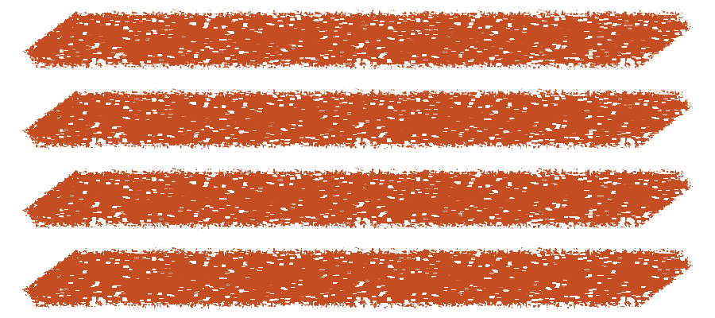
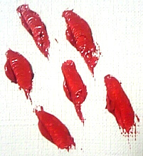
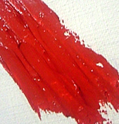
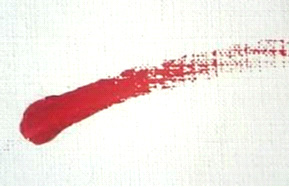

Sketchpad · material research · September 13, 2026
A palette knife that moves paint
The current knife has texture-shaped holes, but no paint to push around. Its fixed grain can exclude the same pixels on every pass. A convincing loaded knife needs an evolving paint surface, a blade carrying paint, and contact that deposits, picks up or redistributes that paint. Surface relief and color variation should supply much of the texture while the body of a loaded opaque stroke stays covered.
This study adds a native overlap diagnostic and a proposed material architecture. It does not implement the new engine. The images below distinguish existing Sketchpad output from physical reference photographs. The earlier opacity and direction changes improved the mask; they did not solve paint transport.
Why overlapping strokes leave the same gaps
The active packaged shader samples paper in document coordinates and converts parts of that field into zero coverage. Its output is a single coverage value: it cannot inspect existing paint quantity, move color or remember what the blade picked up. Repeating the same path with the same settings produces the same exclusions. Changing travel direction can change the pattern, but accumulated paint itself cannot change it.
I extended the hidden native GPU study with eight separate contacts along one identical 96-pixel path, at full pressure and opacity. The sampling band covers 5,280 interior pixels, away from the stroke ends. Every measured pass count leaves 171 pixels exactly transparent: 3.24% of this interior sample remains unpainted after eight passes. This is one controlled path, not a percentage for every knife mark.
{kind=link}

| Separate contacts | Sampled pixels | Exactly transparent | Alpha at least 0.99 |
|---|---|---|---|
| 1 | 5,280 | 171 | 4,850 |
| 2 | 5,280 | 171 | 4,897 |
| 4 | 5,280 | 171 | 4,961 |
| 8 | 5,280 | 171 | 5,011 |
Nonzero coverage does accumulate between contacts. For a constant per-contact alpha a, source-over on an initially transparent pixel gives 1 − (1 − a)n after n contacts. If a = 0, that result stays zero. The separate within-stroke maximum-coverage rule is therefore not the whole explanation: this experiment lifts between passes and still reproduces the defect.
Randomizing the holes each contact could hide this repetition. It would still make texture by omitting paint, with no explanation for ridges, pickup or the way a new stroke reshapes an old one. That is an interim appearance technique, not the material model recommended here.
The physical reference is a changing surface
Okaichi and colleagues studied actual knife marks before constructing a simulation. Their examples distinguish tip presses, flat sliding, whole-blade presses, edge marks and paint-depleted trails. Their model combines a bending blade, canvas paint height and transfer between blade and canvas; displaced paint collects toward the contact boundary. That directly addresses behavior absent from our mask. This is the accessible 2007 workshop paper, not a claim to have reproduced or validated its later journal version. [1]



Physical reference photographs, not Sketchpad renders. Small excerpts from Okaichi et al., Figure 3(a), (c), (e), IIEEJ IEVC 2007. Image rights remain with the authors/publisher. Original paper, page 2.
Paint consistency also matters. GOLDEN distinguishes resistance to flow from leveling: a thick material can soften into rounded forms or retain sharper tool marks. Its acrylic examples show that adding body and adding opacity are different operations; thick transparent gels exist. We should choose an opaque loaded-paint preset deliberately, rather than claim every real knife medium must be opaque. [2]
What that means for our target
My proposed default is a flexible painting blade carrying a generous amount of opaque paint. It should lay down a coherent mass, flatten or build the surface where it contacts, and leave a modest displaced rim. Thin tails and skipped valleys belong to low-load or light-contact behavior. We need both broad smooth regions and local irregularity; uniformly stippled holes are not a substitute for either.
Texture should have several causes with separate coordinate systems. Canvas tooth belongs to the document. Scratches from a dragging edge belong to the local motion. Paint streaks carried on the blade belong to its surface and move with it. Deposited ridges then remain on the canvas. Lighting reveals those ridges without reopening transparency. This separation is a design inference from the evidence and our observed failure.
What mature painting tools separate
Corel Painter's Thick Paint documentation treats paint deposition, grain interaction, plowing and erasing as distinct operations. Its media controls include paint delivery rate, canvas wetness and grain height, with separate controls affecting the shape of deposited thickness. These are artist-facing behaviors; public documentation does not establish the application's internal solver. [3]
Its brush controls distinguish finite load from infinite paint, and zero load can be used to scrape existing paint. Color replenishment and mixing with existing color have separate controls. Tilt can transition a knife between flatter contact and a corner; plow strength and radius affect displacement. These distinctions provide a much better vocabulary than a single texture slider. [4]
ArtRage's 4.5 manual describes a knife that adds paint when Loading is above zero, with flat and edge blade modes. Low paint quantity changes smearing into thinner surface interaction; canvas high points become apparent as paint thins. Loading can run down, while its 100% setting supplies paint indefinitely. Auto Clean controls whether a loaded knife carries contamination between contacts, and rotation can be fixed or follow the stroke. These documented behaviors establish useful precedents without implying we should copy every setting. [5, PDF pages 32–33]
| Artist intention | Our proposed behavior | What must change |
|---|---|---|
| Lay fresh paint | Cover and build a coherent opaque body; preserve readable edges. | Deposit quantity, update surface height and selected pigment. |
| Spread / mix | Drag existing paint, carry streaks forward, mix progressively. | Transfer material through a spatial blade load. |
| Scrape / plow | Thin a wet region and move displaced material toward an edge or onto the blade. | Remove quantity locally with a recorded destination. |
| Scumble lightly | Catch surface peaks and leave valleys visible when contact or load is insufficient. | Compare blade contact to the evolving surface. |
| Draw with the edge | Make narrow deposits or furrows according to load and pose. | Change actual contact geometry, not merely alpha. |
Corel pages consulted here belong to its Painter 2020 documentation; ArtRage is the official 4.5 manual. These are established interaction references, not a survey of the newest releases. Other applications' general stamp-rotation controls are covered in the orientation study.
Recommended model: paint depth plus a loaded blade
Use a sparse 2.5D surface: a paint column above each active canvas cell, rather than a full volume of fluid cells. Couple it to a small paint map on the blade. This is a practical architecture to prototype, not a promise that one height channel will reproduce all oil-paint physics.
| Approach | Strength | Limitation / recommendation |
|---|---|---|
| Coverage plus shaded noise | Can improve opaque visual texture with modest architectural change. | Cannot explain material relocation or genuine pickup. Useful only as an appearance path. |
| Surface quantity, blade transfer, bounded pigment depth | Supports buildup, filling grain, plowing and paint carried across a stroke. | Requires ordered simulation, persistence and careful calibration. Recommended target. |
| Full volumetric viscous simulation | Can represent geometry outside a single surface, including some folds and overhangs. | Substantially broader implementation and validation scope. No evidence that Sketchpad needs this first. |
1. The canvas must remember material
Separate substrate relief, immobile paint and movable paint. A useful contact surface is substrate height + dry paint height + wet paint height. Paper remains fixed, but depositing enough paint changes the effective surface above it. A valley is therefore a place that may fill, not a permanent permission bit forbidding color.
Color requires some depth information too. Stuyck et al. use bounded pigment stacks in a 2.5D oil-painting system: covering a color need not destroy it, and later interaction can reach beneath the top deposit. Their layer limit merges deeper information when necessary; drying separates active from static material. This is useful evidence for preserving a little buried color rather than immediately averaging everything into one RGB value. Their historical mobile result does not predict Atlas or Apollo performance. [6]
Start by evaluating two movable pigment strata per active cell, with an explicit merge rule when capacity is exceeded. That count is a proposed budget, not a finding that two are universally sufficient. These material strata live inside a drawing layer; they are not additional rows in the Layers panel. Keep ordinary raster layers available without allocating paint simulation state.
2. The blade must carry more than one averaged color
A single reservoir color makes every part of the blade equally contaminated. Instead, retain a small map of paint amount and pigment across its underside. Different portions can pick up different colors and leave coherent streaks. The map moves with blade pose, so it should not be regenerated at every pointer event or internal stroke chunk.
Load is a material budget. Pickup adds to the blade and removes from the canvas; deposition does the reverse. Auto refill is an explicit source of new paint. Cleaning discards blade paint explicitly. Accounting for those operations lets us detect accidental creation or deletion while still offering convenient nonphysical controls.
3. Contact determines where paint goes
Represent the blade underside as a simple flexible surface with flat, tip and edge contact. Pressure should influence contact and displacement, with an empirically tuned mapping; tablet pressure is not a calibrated measurement of force. Tilt, azimuth and supported barrel rotation determine pose. Mouse input needs a stable preset pose and accessible angle control.
Keep pose independent of travel. A sideways drag should sweep the same held blade sideways. Motion determines where dragged material and grooves continue, while pose determines the contact footprint. Direction filtering must retain its state through pauses and internal storage chunks. Full details and turn/reversal cases are in the orientation report.
For each bounded movement step, evaluate the swept contact against the current surface. Estimate how much paint the blade displaces, transfers or leaves behind; move excess toward the leading and side boundaries or onto the blade. Limit every transfer by available quantity, preserve nonnegative depth and retain pigment with the moved material. Numerical integration must resolve overlap in temporal order. The next step reads the surface produced by the previous step.
This proposed local transfer law needs calibration. It is not enough to rename a noise mask “physics.” We should compare how deposit width, rim height, depletion distance and color carry change with load and pose, then tune one relationship at a time against repeatable physical samples.
4. Render texture without deleting the body
Derive surface normals from deposited height and shade those normals with restrained lighting. Keep pigment/base color distinct from shaded display color: otherwise the knife can pick up a highlight as though it were white pigment. Store relief so it survives camera movement and later contact.
Opaque paint can have dark grooves and bright ridges while retaining alpha one. Real holes remain appropriate where paint is absent, but relief does not inherently require holes. A separate optical model can later support translucent media. Practical Pigment Mixing addresses pigment-like color interpolation, with a model aimed at homogeneous opaque mixtures; it does not supply paint transport, blade mechanics or a complete translucent layering solution. [7]
Initially make paint stable after lift. Add optional settling only after active contact behaves well, with explicit rules for how settling joins undo history. A stroke should never appear to vanish because its preview used a different model from the committed material.
Make the powerful model easy to use
The default preset should be Loaded Knife: selected opaque color, generous replenishment, clean blade at contact start and restrained pickup. At opacity 100%, its filled interior covers the destination. This directly serves painting shapes and industrial-design studies without forcing the artist to simulate every studio chore.
Offer Mix / Spread and Scrape as deliberate behaviors. The former emphasizes pickup and carrying wet color. The latter starts with an unloaded blade and removes or redistributes movable paint under contact. “Scrape” must not secretly erase unrelated drawing layers beneath the active layer.
Keep Size, Load and Mix close at hand. A small Flat / Edge control supplies predictable mouse and touch access; tablet pose can vary contact continuously when available. Angle lock or Follow Stroke belongs in an accessible secondary control. Advanced editing can expose blade shape, flexibility, surface roughness and depletion, but the everyday workspace should show the useful consequences rather than a screenful of simulation coefficients.
Keep opacity independent from load. Lowering a composition control should not unexpectedly give the blade less material. For the first slice, prioritize physically coherent opaque paint; any per-stroke opacity feature must define whether it blends the entire before/after material transaction or only its displayed color. That decision affects subsequent pickup and must be tested, not hidden behind a familiar slider.
How it fits the shader engine—and what it costs
The existing coverage contract remains appropriate for hard round and similar brushes. The knife needs a stateful material contract alongside it. A brush package can still provide shaders, but the engine must own declared resources, bounded reads and writes, dispatch ordering, versioning and history. Letting a shader return richer color alone cannot give it missing canvas state.
Use sparse affected tiles, a declared halo for displacement and normal reconstruction, and a fixed simulation resolution independent of viewport zoom. Avoid concurrent substeps writing the same material cell without a defined order. Ping-pong buffers or staged transfer passes are candidates; each needs an oracle checking conservation and event-subdivision sensitivity. If a transfer reaches the working-region boundary, expand or retain the excess explicitly instead of dropping it.
For scale, a hypothetical 256 × 256 tile with 16 bytes of material state per cell consumes 1 MiB; 64 such tiles consume 64 MiB for one copy. A fully allocated 4096 × 4096 surface at that packing consumes 256 MiB before history, scratch storage, color caches or a second simulation buffer. These are arithmetic examples, not a finalized format or measured footprint. Sparse allocation and a bounded pigment representation matter especially on Apollo.
This will do more work than the current mask. GPU execution can make local updates practical, but it does not guarantee an improvement in speed. Measure long strokes at 512-pixel brush size, wet overlap, boundary crossings, undo bursts and saving on both machines. Report input-to-visible latency and peak memory alongside average throughput. A physically richer brush that interrupts a broad stroke would fail the user's primary requirement.
History and saving must preserve material depth, pigment strata and all state needed to continue predictably. Dirty blade persistence requires explicit undo semantics too. Stroke coordinates alone cannot recover destination-dependent mixing without the initial surface, brush version, parameters and deterministic execution. Keep material snapshots or tile deltas as the recovery authority; replay can be an optimization or diagnostic with a tested error policy.
Moving a selection must move its material fields with its pixels. Merging layers needs a documented conversion of their material stacks; imported flat images need an explicit flat/dry interpretation. PNG export records the chosen shaded appearance, while the native document retains editable material. These are part of shipping a material brush, not optional cleanup after its preview looks convincing.
A small convincing implementation before a large system
The first implementation should be one loaded opaque blade over a simple relief surface, including a real quantity budget, limited displacement and height-based appearance. Demonstrate broad deposit and overlap before expanding brush variety. Then add spatial pickup and bounded pigment depth, followed by calibrated tilt/edge behavior. Do not call the first stage a complete natural-media engine.
The decisive visual exercise is a loaded light-colored stroke crossing an earlier colored stroke, then a second pass over the same path. With mixing disabled and enough deposited paint, the top body should cover; old grain exclusions should not remain permanently visible. With mixing enabled, the crossing should change the blade's downstream streaks. The two settings must differ for a material reason.
| Acceptance case | Required evidence |
|---|---|
| Repeated loaded coverage | Valleys fill when the supplied amount and contact permit it. No fixed zero-alpha stencil survives arbitrarily large deposition. |
| Relief without transparency | Ridges remain visible over both light and dark backgrounds while the loaded interior remains opaque. |
| Finite and infinite load | Finite supply depletes consistently with deposited amount; replenished mode continues without an unexplained dry tail. |
| Pickup and cleaning | A color crossing affects downstream paint; cleaning resets the blade; a clean low-mix deposit covers predictably. |
| Conservation | Canvas plus blade quantity balances within a defined numerical tolerance, accounting for refill, cleaning and exports from the domain. |
| Plowing a mound | Flattened paint reappears at a boundary or on the blade. Wet removal is not unexplained volume loss. |
| Dry versus wet | Dry material remains stable under ordinary spreading; wet material can move. Lower UI layers remain protected. |
| Pose and travel | Flat, tip and edge contacts differ; sideways drags, curves, stops and reversals do not spin or reset the texture. |
| Sampling and chunking | Equivalent paths at different input subdivisions converge within a documented tolerance, with no storage-boundary seam. |
| Large live contact | A 512-pixel stroke across most of the canvas stays visible during contact and after lift, with bounded memory. |
| History and persistence | Undo/redo and save/load restore both appearance and the response to the next wet stroke. |
| Editing and export | Selection movement, layer operations and PNG export retain their documented material or flattened behavior. |
What is established, and what remains uncertain
The present defect is measured in native output, and the missing state is visible in source. The research establishes credible mechanisms and mature interaction precedents. It does not establish our final coefficients, acceptable simulation resolution, pigment-stack depth or performance. Those need prototype measurements and artist review on actual tablet hardware.
A single height surface will miss overhangs and some folded paint shapes. Two pigment strata can lose information. A stylus cannot directly capture every degree of freedom of a physical blade. Those limits should guide calibration and honest scope, not justify returning to permanent grain holes.
The extended native study passed on Atlas and Apollo with identical overlap counts. The diagnostic records the current defect without asserting that future models must preserve it. No production brush formula changed in this research revision.
References and method
Primary research and official documentation reviewed September 13, 2026. Physical photographs were inspected from the paper's embedded images. The current Sketchpad shader and native GPU output were inspected directly. Source findings are cited in place; the recommended architecture, budgets and acceptance criteria are this study's synthesis. No cross-application benchmark or physical paint experiment was performed.
- Naoto Okaichi, Henry Johan, Takashi Imagire and Tomoyuki Nishita. A Painting Knife Model for Interactive Oil Painting. IIEEJ Image Electronics and Visual Computing Workshop, 2007. Physical marks, blade contact, height and transfer.
- GOLDEN Artist Colors, Just Paint. Super Textural Painting with Acrylic. Material consistency, leveling and relief; acrylic evidence, not an oil rheology calibration.
- Corel Painter 2020 Help. Thick Paint — Media controls. Paint, grain, plowing, wetness and deposition controls.
- Corel Painter 2020 Help. Thick Paint — Brush controls. Load, replenishment, mixing, corner tilt and plowing.
- Ambient Design. ArtRage 4.5 Manual. Palette Knife section, PDF pages 32–33. Loaded versus unloaded behavior, flat/edge, cleaning and rotation.
- Tuur Stuyck, Fang Da, Sunil Hadap and Philip Dutré. Real-Time Oil Painting on Mobile Hardware. Computer Graphics Forum, online 2016 / volume 2017. Surface simulation, bounded pigment depth and drying.
- Šárka Sochorová and Ondřej Jamriška. Practical Pigment Mixing for Digital Painting. ACM Transactions on Graphics, 2021. Pigment-like mixture behavior and optical scope.
General brush-engine research · Pen pose and drawing direction · Atlas gallery